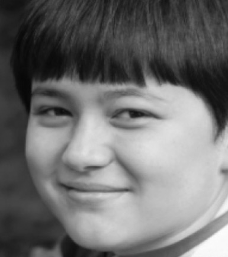

01Background
Problem: Creating a user-centered product that solves a problem in a specific user process.
We found a boy named Logan Tyler, who is fourteen years old. He is visually impaired and needs a guide dog to escort him. He mainly reads in Braille and has problems making friends.

- Name:
- Logan Tyler
- Age:
- 14
- Difficulties:
- Reading, writing
- Disability:
- Unable to see near and far, with blurred vision due to retinal disease.
02Task Analysis
Process:
I was tasked with working with a partner to make pasta as Logan. We were asked to understand and picture ourselves as a person who can’t see normally.
For our task analysis, my partner and I made pasta. By doing so, we put on glasses and rubbed glue all over them to see what it would be like to have little to no vision.
03Ideation
Wait for pasta to boil (Whistling)
Turning off the stove (Clicking)
Pour sauce on pasta (Portion size)
04Prototyping 1
CAD Models
I decided on the design “waiting for pasta to boil.” I wanted to create a whistling buddy for Logan that is useful when the water boils. Since he has a hard time seeing, having a whistle buddy means he can hear the sound of the water boiling.
Foam Model
I designed ten ideas based on the whistling of a kettle. I made a few CAD models: clip-ons for the side of each pot, a pot lid that resembles a kettle, and a few other whistles that can be used with or without the lid.
05Prototyping 2
Foam and Obo model
06How does it work?
Place the whiddi onto the pot like a clip, and wait for the water to boil; then it will start whistling.